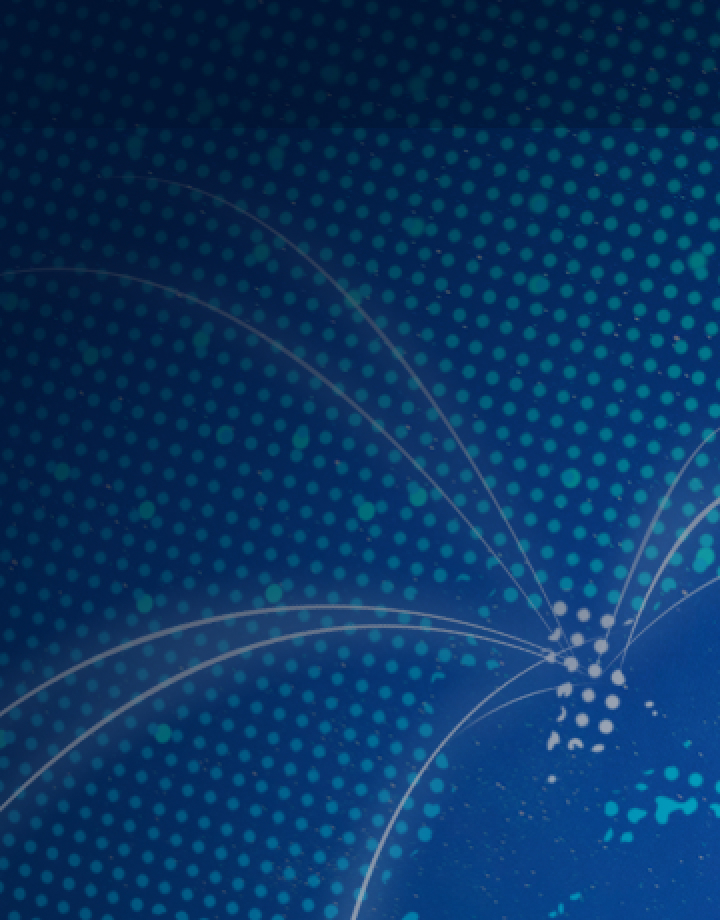
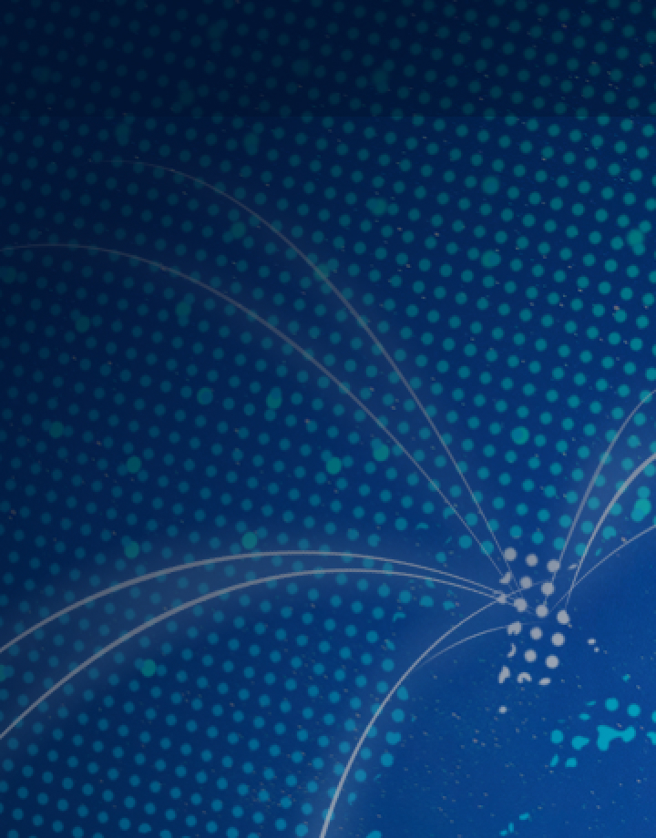

기후·에너지 정책 싱크탱크
Find the NEXT
사단법인 넥스트는 아시아의 넷제로 에너지 전환을
위한
비영리 에너지 기후정책 싱크탱크입니다.

SPOTLIGHT
행사 소식
YOUTUBE
1:1문의하기
| 이메일 (필수) |
|
|---|---|
| 제목 (필수) |
|
| 내용(필수) |
|
| 이용약관 |
|---|
|
개인정보보호법에 따라 회원가입 신청하시는 분께 수집하는 개인정보의 항목, 개인정보의 수집 및 이용목적, 개인정보의 보유 및 이용기간, 동의 거부권 및 동의 거부 시 불이익에 관한 사항을 안내 드리오니 자세히 읽은 후 동의하여 주시기 바랍 니다. 1. 수집하는 개인정보 이용자는 회원가입을 하지 않아도 정보 검색, 뉴스 보기 등 대부분의 Next group 동의 거부권 및 동의 거부 시 불이익 에 관한 사항을 안내 드리오니 자세히 읽은 후 동의하여 주시기 바랍니다. 개인정보보호법에 따라 회원가입 신청하시는 분께 수집하는 개인정보의 항목, 개인정보의 수집 및 이용목적, 개인정보의 개인정보보호법에 따라 회원가입 신청하시는 분께 수집하는 개인정보의 항목, 개인정보의 수집 및 이용목적, 개인정보의 보유 및 이용기간, 동의 거부권 및 동의 거부 시 불이익에 관한 사항을 안내 드리오니 자세히 읽은 후 동의하여 주시기 바랍 니다. 1. 수집하는 개인정보 이용자는 회원가입을 하지 않아도 정보 검색, 뉴스 보기 등 대부분의 Next group 동의 거부권 및 동의 거부 시 불이익 에 관한 사항을 안내 드리오니 자세히 읽은 후 동의하여 주시기 바랍니다. 개인정보보호법에 따라 회원가입 신청하시는 분께 수집하는 개인정보의 항목, 개인정보의 수집 및 이용목적, 개인정보의 |